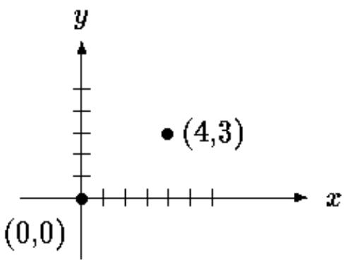
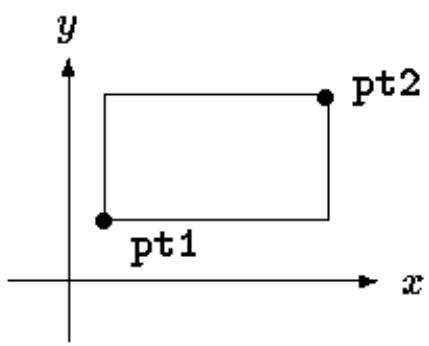
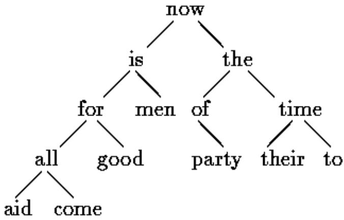
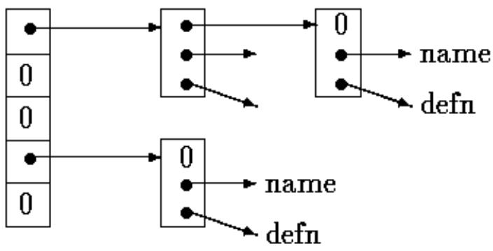

A structure is a collection of one or more variables, possibly of different types, grouped together under a single name for convenient handling. (Structures are called ``records'' in some languages, notably Pascal.) Structures help to organize complicated data, particularly in large programs, because they permit a group of related variables to be treated as a unit instead of as separate entities.
One traditional example of a structure is the payroll record: an employee is described by a set of attributes such as name, address, social security number, salary, etc. Some of these in turn could be structures: a name has several components, as does an address and even a salary. Another example, more typical for C, comes from graphics: a point is a pair of coordinate, a rectangle is a pair of points, and so on.
The main change made by the ANSI standard is to define structure assignment - structures may be copied and assigned to, passed to functions, and returned by functions. This has been supported by most compilers for many years, but the properties are now precisely defined. Automatic structures and arrays may now also be initialized.
Let us create a few structures suitable for graphics. The basic object is a point, which we will assume has an x coordinate and a y coordinate, both integers.

The two components can be placed in a structure declared like this:
struct point {
int x;
int y;
};
The keyword struct introduces a structure declaration, which is a list of declarations enclosed in braces. An optional name called a structure tag may follow the word struct (as with point here). The tag names this kind of structure, and can be used subsequently as a shorthand for the part of the declaration in braces.
The variables named in a structure are called members. A structure member or tag and an ordinary (i.e., non-member) variable can have the same name without conflict, since they can always be distinguished by context. Furthermore, the same member names may occur in different structures, although as a matter of style one would normally use the same names only for closely related objects.
A struct declaration defines a type. The right brace that terminates the list of members may be followed by a list of variables, just as for any basic type. That is,
struct { ... } x, y, z;
is syntactically analogous to
int x, y, z;
in the sense that each statement declares x, y and z to be variables of the named type and causes space to be set aside for them.
A structure declaration that is not followed by a list of variables reserves no storage; it merely describes a template or shape of a structure. If the declaration is tagged, however, the tag can be used later in definitions of instances of the structure. For example, given the declaration of point above,
struct point pt;
defines a variable pt which is a structure of type struct point. A structure can be initialized by following its definition with a list of initializers, each a constant expression, for the members:
struct maxpt = { 320, 200 };
An automatic structure may also be initialized by assignment or by calling a function that returns a structure of the right type.
A member of a particular structure is referred to in an expression by a construction of the form
The structure member operator ``.'' connects the structure name and the member name. To print the coordinates of the point pt, for instance,
printf("%d,%d", pt.x, pt.y);
or to compute the distance from the origin (0,0) to pt,
double dist, sqrt(double);
dist = sqrt((double)pt.x * pt.x + (double)pt.y * pt.y);
Structures can be nested. One representation of a rectangle is a pair of points that denote the diagonally opposite corners:
struct rect screen;
then
screen.pt1.x
refers to the x coordinate of the pt1 member of screen.

struct rect {
struct point pt1;
struct point pt2;
};
The rect structure contains two point structures. If we declare screen as
The only legal operations on a structure are copying it or assigning to it as a unit, taking its address with &, and accessing its members. Copy and assignment include passing arguments to functions and returning values from functions as well. Structures may not be compared. A structure may be initialized by a list of constant member values; an automatic structure may also be initialized by an assignment.
Let us investigate structures by writing some functions to manipulate points and rectangles. There are at least three possible approaches: pass components separately, pass an entire structure, or pass a pointer to it. Each has its good points and bad points.
The first function, makepoint, will take two integers and return a point structure:
/* makepoint: make a point from x and y components */
struct point makepoint(int x, int y)
{
struct point temp;
temp.x = x;
temp.y = y;
return temp;
}
Notice that there is no conflict between the argument name and the member with the same name; indeed the re-use of the names stresses the relationship.
makepoint can now be used to initialize any structure dynamically, or to provide structure arguments to a function:
struct point middle;
struct point makepoint(int, int);
screen.pt1 = makepoint(0, 0);
screen.pt2 = makepoint(XMAX, YMAX);
middle = makepoint((screen.pt1.x + screen.pt2.x)/2,
(screen.pt1.y + screen.pt2.y)/2);
The next step is a set of functions to do arithmetic on points. For instance,
/* addpoints: add two points */
struct addpoint(struct point p1, struct point p2)
{
p1.x += p2.x;
p1.y += p2.y;
return p1;
}
Here both the arguments and the return value are structures. We incremented the components in p1 rather than using an explicit temporary variable to emphasize that structure parameters are passed by value like any others.
As another example, the function ptinrect tests whether a point is inside a rectangle, where we have adopted the convention that a rectangle includes its left and bottom sides but not its top and right sides:
/* ptinrect: return 1 if p in r, 0 if not */
int ptinrect(struct point p, struct rect r)
{
return p.x >= r.pt1.x && p.x < r.pt2.x
&& p.y >= r.pt1.y && p.y < r.pt2.y;
}
This assumes that the rectangle is presented in a standard form where the pt1 coordinates are less than the pt2 coordinates. The following function returns a rectangle guaranteed to be in canonical form:
#define min(a, b) ((a) < (b) ? (a) : (b))
#define max(a, b) ((a) > (b) ? (a) : (b))
/* canonrect: canonicalize coordinates of rectangle */
struct rect canonrect(struct rect r)
{
struct rect temp;
temp.pt1.x = min(r.pt1.x, r.pt2.x);
temp.pt1.y = min(r.pt1.y, r.pt2.y);
temp.pt2.x = max(r.pt1.x, r.pt2.x);
temp.pt2.y = max(r.pt1.y, r.pt2.y);
return temp;
}
If a large structure is to be passed to a function, it is generally more efficient to pass a pointer than to copy the whole structure. Structure pointers are just like pointers to ordinary variables. The declaration
struct point pp; says that pp is a pointer to a structure of type struct point. If pp points to a point structure, pp is the structure, and (pp).x and (pp).y are the members. To use pp, we might write, for example,
struct point origin, *pp;
pp = &origin;
printf("origin is (%d,%d)\n", (*pp).x, (*pp).y);
The parentheses are necessary in (pp).x because the precedence of the structure member operator . is higher then . The expression pp.x means (pp.x), which is illegal here because x is not a pointer.
Pointers to structures are so frequently used that an alternative notation is provided as a shorthand. If p is a pointer to a structure, then
p->member-of-structure refers to the particular member. So we could write instead
printf("origin is (%d,%d)\n", pp->x, pp->y); Both . and -> associate from left to right, so if we have
struct rect r, *rp = &r;
then these four expressions are equivalent:
r.pt1.x
rp->pt1.x
(r.pt1).x
(rp->pt1).x
The structure operators . and ->, together with () for function calls and [] for subscripts, are at the top of the precedence hierarchy and thus bind very tightly. For example, given the declaration
struct {
int len;
char *str;
} *p;
then
increments len, not p, because the implied parenthesization is ++(p->len). Parentheses can be used to alter binding: (++p)->len increments p before accessing len, and (p++)->len increments p afterward. (This last set of parentheses is unnecessary.)
In the same way, p->str fetches whatever str points to; p->str++ increments str after accessing whatever it points to (just like s++); (p->str)++ increments whatever str points to; and *p++->str increments p after accessing whatever str points to.
Consider writing a program to count the occurrences of each C keyword. We need an array of character strings to hold the names, and an array of integers for the counts. One possibility is to use two parallel arrays, keyword and keycount, as in
char *keyword[NKEYS];
int keycount[NKEYS];
But the very fact that the arrays are parallel suggests a different organization, an array of structures. Each keyword is a pair:
char *word;
int cout;
and there is an array of pairs. The structure declaration
struct key {
char *word;
int count;
} keytab[NKEYS];
declares a structure type key, defines an array keytab of structures of this type, and sets aside storage for them. Each element of the array is a structure. This could also be written
struct key {
char *word;
int count;
};
struct key keytab[NKEYS];
Since the structure keytab contains a constant set of names, it is easiest to make it an external variable and initialize it once and for all when it is defined. The structure initialization is analogous to earlier ones - the definition is followed by a list of initializers enclosed in braces:
struct key {
char *word;
int count;
} keytab[] = {
"auto", 0,
"break", 0,
"case", 0,
"char", 0,
"const", 0,
"continue", 0,
"default", 0,
/* ... */
"unsigned", 0,
"void", 0,
"volatile", 0,
"while", 0
};
The initializers are listed in pairs corresponding to the structure members. It would be more precise to enclose the initializers for each "row" or structure in braces, as in
{"auto", 0 }, {"break", 0 }, {"case", 0 },
but inner braces are not necessary when the initializers are simple variables or character strings, and when all are present. As usual, the number of entries in the array keytab will be computed if the initializers are present and the [] is left empty.
The keyword counting program begins with the definition of keytab. The main routine reads the input by repeatedly calling a function getword that fetches one word at a time. Each word is looked up in keytab with a version of the binary search function that we wrote in Chapter 3. The list of keywords must be sorted in increasing order in the table.
#include <stdio.h>
#include <ctype.h>
#include <string.h>
#define MAXWORD 100
int getword(char *, int);
int binsearch(char *, struct key *, int);
/* count C keywords */
main()
{
int n;
char word[MAXWORD];
while (getword(word, MAXWORD) != EOF)
if (isalpha(word[0]))
if ((n = binsearch(word, keytab, NKEYS)) >= 0)
keytab[n].count++;
for (n = 0; n < NKEYS; n++)
if (keytab[n].count > 0)
printf("%4d %s\n",
keytab[n].count, keytab[n].word);
return 0;
}
/* binsearch: find word in tab[0]...tab[n-1] */
int binsearch(char *word, struct key tab[], int n)
{
int cond;
int low, high, mid;
low = 0;
high = n - 1;
while (low <= high) {
mid = (low+high) / 2;
if ((cond = strcmp(word, tab[mid].word)) < 0)
high = mid - 1;
else if (cond > 0)
low = mid + 1;
else
return mid;
}
return -1;
}
We will show the function getword in a moment; for now it suffices to say that each call to getword finds a word, which is copied into the array named as its first argument.
The quantity NKEYS is the number of keywords in keytab. Although we could count this by hand, it's a lot easier and safer to do it by machine, especially if the list is subject to change. One possibility would be to terminate the list of initializers with a null pointer, then loop along keytab until the end is found.
But this is more than is needed, since the size of the array is completely determined at compile time. The size of the array is the size of one entry times the number of entries, so the number of entries is just
size of keytab / size of struct key
C provides a compile-time unary operator called sizeof that can be used to compute the size of any object. The expressions
sizeof object
and
sizeof (type name)
yield an integer equal to the size of the specified object or type in bytes. (Strictly, sizeof produces an unsigned integer value whose type, size_t, is defined in the header
In our case, the number of keywords is the size of the array divided by the size of one element. This computation is used in a #define statement to set the value of NKEYS:
#define NKEYS (sizeof keytab / sizeof(struct key))
Another way to write this is to divide the array size by the size of a specific element:
#define NKEYS (sizeof keytab / sizeof(keytab[0]))
This has the advantage that it does not need to be changed if the type changes.
A sizeof can not be used in a #if line, because the preprocessor does not parse type names. But the expression in the #define is not evaluated by the preprocessor, so the code here is legal.
Now for the function getword. We have written a more general getword than is necessary for this program, but it is not complicated. getword fetches the next ``word'' from the input, where a word is either a string of letters and digits beginning with a letter, or a single nonwhite space character. The function value is the first character of the word, or EOF for end of file, or the character itself if it is not alphabetic.
/* getword: get next word or character from input */
int getword(char *word, int lim)
{
int c, getch(void);
void ungetch(int);
char *w = word;
while (isspace(c = getch()))
;
if (c != EOF)
*w++ = c;
if (!isalpha(c)) {
*w = '\0';
return c;
}
for (; --lim > 0; w++)
if (!isalnum(*w = getch())) {
ungetch(*w);
break;
}
*w = '\0';
return word[0];
}
getword uses the getch and ungetch that we wrote in Chapter 4. When the collection of an alphanumeric token stops, getword has gone one character too far. The call to ungetch pushes that character back on the input for the next call. getword also uses isspace to skip whitespace, isalpha to identify letters, and isalnum to identify letters and digits; all are from the standard header
Exercise 6-1. Our version of getword does not properly handle underscores, string constants, comments, or preprocessor control lines. Write a better version.
To illustrate some of the considerations involved with pointers to and arrays of structures, let us write the keyword-counting program again, this time using pointers instead of array indices.
The external declaration of keytab need not change, but main and binsearch do need modification.
#include <stdio.h>
#include <ctype.h>
#include <string.h>
#define MAXWORD 100
int getword(char *, int);
struct key *binsearch(char *, struct key *, int);
/* count C keywords; pointer version */
main()
{
char word[MAXWORD];
struct key *p;
while (getword(word, MAXWORD) != EOF)
if (isalpha(word[0]))
if ((p=binsearch(word, keytab, NKEYS)) != NULL)
p->count++;
for (p = keytab; p < keytab + NKEYS; p++)
if (p->count > 0)
printf("%4d %s\n", p->count, p->word);
return 0;
}
/* binsearch: find word in tab[0]...tab[n-1] */
struct key *binsearch(char *word, struck key *tab, int n)
{
int cond;
struct key *low = &tab[0];
struct key *high = &tab[n];
struct key *mid;
while (low < high) {
mid = low + (high-low) / 2;
if ((cond = strcmp(word, mid->word)) < 0)
high = mid;
else if (cond > 0)
low = mid + 1;
else
return mid;
}
return NULL;
}
There are several things worthy of note here. First, the declaration of binsearch must indicate that it returns a pointer to struct key instead of an integer; this is declared both in the function prototype and in binsearch. If binsearch finds the word, it returns a pointer to it; if it fails, it returns NULL.
Second, the elements of keytab are now accessed by pointers. This requires significant changes in binsearch.
The initializers for low and high are now pointers to the beginning and just past the end of the table.
The computation of the middle element can no longer be simply
mid = (low+high) / 2 /* WRONG */
because the addition of pointers is illegal. Subtraction is legal, however, so high-low is the number of elements, and thus
mid = low + (high-low) / 2
sets mid to the element halfway between low and high.
The most important change is to adjust the algorithm to make sure that it does not generate an illegal pointer or attempt to access an element outside the array. The problem is that &tab[- 1] and &tab[n] are both outside the limits of the array tab. The former is strictly illegal, and it is illegal to dereference the latter. The language definition does guarantee, however, that pointer arithmetic that involves the first element beyond the end of an array (that is, &tab[n]) will work correctly.
In main we wrote
for (p = keytab; p < keytab + NKEYS; p++)
If p is a pointer to a structure, arithmetic on p takes into account the size of the structure, so p++ increments p by the correct amount to get the next element of the array of structures, and the test stops the loop at the right time.
Don't assume, however, that the size of a structure is the sum of the sizes of its members. Because of alignment requirements for different objects, there may be unnamed ``holes'' in a structure. Thus, for instance, if a char is one byte and an int four bytes, the structure
struct {
char c;
int i;
};
might well require eight bytes, not five. The sizeof operator returns the proper value.
Finally, an aside on program format: when a function returns a complicated type like a structure pointer, as in
struct key binsearch(char word, struct key *tab, int n) the function name can be hard to see, and to find with a text editor. Accordingly an alternate style is sometimes used:
struct key *
binsearch(char *word, struct key *tab, int n)
This is a matter of personal taste; pick the form you like and hold to it.
Suppose we want to handle the more general problem of counting the occurrences of all the words in some input. Since the list of words isn't known in advance, we can't conveniently sort it and use a binary search. Yet we can't do a linear search for each word as it arrives, to see if it's already been seen; the program would take too long. (More precisely, its running time is likely to grow quadratically with the number of input words.) How can we organize the data to copy efficiently with a list or arbitrary words?
One solution is to keep the set of words seen so far sorted at all times, by placing each word into its proper position in the order as it arrives. This shouldn't be done by shifting words in a linear array, though - that also takes too long. Instead we will use a data structure called a binary tree.
The tree contains one ``node'' per distinct word; each node contains
• A pointer to the text of the word,
• A count of the number of occurrences,
• A pointer to the left child node,
• A pointer to the right child node.
No node may have more than two children; it might have only zero or one.
The nodes are maintained so that at any node the left subtree contains only words that are lexicographically less than the word at the node, and the right subtree contains only words that are greater. This is the tree for the sentence ``now is the time for all good men to come to the aid of their party'', as built by inserting each word as it is encountered:

To find out whether a new word is already in the tree, start at the root and compare the new word to the word stored at that node. If they match, the question is answered affirmatively. If the new record is less than the tree word, continue searching at the left child, otherwise at the right child. If there is no child in the required direction, the new word is not in the tree, and in fact the empty slot is the proper place to add the new word. This process is recursive, since the search from any node uses a search from one of its children. Accordingly, recursive routines for insertion and printing will be most natural.
Going back to the description of a node, it is most conveniently represented as a structure with four components:
struct tnode { /* the tree node: */
char *word; /* points to the text */
int count; /* number of occurrences */
struct tnode *left; /* left child */
struct tnode *right; /* right child */
};
This recursive declaration of a node might look chancy, but it's correct. It is illegal for a structure to contain an instance of itself, but
struct tnode *left;
declares left to be a pointer to a tnode, not a tnode itself.
Occasionally, one needs a variation of self-referential structures: two structures that refer to each other. The way to handle this is:
struct t {
...
struct s *p; /* p points to an s */
};
struct s {
...
struct t *q; /* q points to a t */
};
The code for the whole program is surprisingly small, given a handful of supporting routines like getword that we have already written. The main routine reads words with getword and installs them in the tree with addtree.
#include <stdio.h>
#include <ctype.h>
#include <string.h>
#define MAXWORD 100
struct tnode *addtree(struct tnode *, char *);
void treeprint(struct tnode *);
int getword(char *, int);
/* word frequency count */
main()
{
struct tnode *root;
char word[MAXWORD];
root = NULL;
while (getword(word, MAXWORD) != EOF)
if (isalpha(word[0]))
root = addtree(root, word);
treeprint(root);
return 0;
}
The function addtree is recursive. A word is presented by main to the top level (the root) of the tree. At each stage, that word is compared to the word already stored at the node, and is percolated down to either the left or right subtree by a recursive call to adtree. Eventually, the word either matches something already in the tree (in which case the count is incremented), or a null pointer is encountered, indicating that a node must be created and added to the tree. If a new node is created, addtree returns a pointer to it, which is installed in the parent node.
struct tnode *talloc(void);
char *strdup(char *);
/* addtree: add a node with w, at or below p */
struct treenode *addtree(struct tnode *p, char *w)
{
int cond;
if (p == NULL) { /* a new word has arrived */
p = talloc(); /* make a new node */
p->word = strdup(w);
p->count = 1;
p->left = p->right = NULL;
} else if ((cond = strcmp(w, p->word)) == 0)
p->count++; /* repeated word */
else if (cond < 0) /* less than into left subtree */
p->left = addtree(p->left, w);
else /* greater than into right subtree */
p->right = addtree(p->right, w);
return p;
}
Storage for the new node is fetched by a routine talloc, which returns a pointer to a free space suitable for holding a tree node, and the new word is copied into a hidden space by strdup. (We will discuss these routines in a moment.) The count is initialized, and the two children are made null. This part of the code is executed only at the leaves of the tree, when a new node is being added. We have (unwisely) omitted error checking on the values returned by strdup and talloc.
treeprint prints the tree in sorted order; at each node, it prints the left subtree (all the words less than this word), then the word itself, then the right subtree (all the words greater). If you feel shaky about how recursion works, simulate treeprint as it operates on the tree shown above.
/* treeprint: in-order print of tree p */
void treeprint(struct tnode *p)
{
if (p != NULL) {
treeprint(p->left);
printf("%4d %s\n", p->count, p->word);
treeprint(p->right);
}
}
A practical note: if the tree becomes ``unbalanced'' because the words don't arrive in random order, the running time of the program can grow too much. As a worst case, if the words are already in order, this program does an expensive simulation of linear search. There are generalizations of the binary tree that do not suffer from this worst-case behavior, but we will not describe them here.
Before leaving this example, it is also worth a brief digression on a problem related to storage allocators. Clearly it's desirable that there be only one storage allocator in a program, even though it allocates different kinds of objects. But if one allocator is to process requests for, say, pointers to chars and pointers to struct tnodes, two questions arise. First, how does it meet the requirement of most real machines that objects of certain types must satisfy alignment restrictions (for example, integers often must be located at even addresses)? Second, what declarations can cope with the fact that an allocator must necessarily return different kinds of pointers?
Alignment requirements can generally be satisfied easily, at the cost of some wasted space, by ensuring that the allocator always returns a pointer that meets all alignment restrictions. The alloc of Chapter 5 does not guarantee any particular alignment, so we will use the standard library function malloc, which does. In Chapter 8 we will show one way to implement malloc.
The question of the type declaration for a function like malloc is a vexing one for any language that takes its type-checking seriously. In C, the proper method is to declare that malloc returns a pointer to void, then explicitly coerce the pointer into the desired type with a cast. malloc and related routines are declared in the standard header
#include <stdlib.h>
/* talloc: make a tnode */
struct tnode *talloc(void)
{
return (struct tnode *) malloc(sizeof(struct tnode));
}
strdup merely copies the string given by its argument into a safe place, obtained by a call on malloc:
char *strdup(char *s) /* make a duplicate of s */
{
char *p;
p = (char *) malloc(strlen(s)+1); /* +1 for '\0' */
if (p != NULL)
strcpy(p, s);
return p;
}
malloc returns NULL if no space is available; strdup passes that value on, leaving errorhandling to its caller.
Storage obtained by calling malloc may be freed for re-use by calling free; see Chapters 8 and 7.
Exercise 6-2. Write a program that reads a C program and prints in alphabetical order each group of variable names that are identical in the first 6 characters, but different somewhere thereafter. Don't count words within strings and comments. Make 6 a parameter that can be set from the command line.
Exercise 6-3. Write a cross-referencer that prints a list of all words in a document, and for each word, a list of the line numbers on which it occurs. Remove noise words like the,''and,'' and so on.
Exercise 6-4. Write a program that prints the distinct words in its input sorted into decreasing order of frequency of occurrence. Precede each word by its count.
In this section we will write the innards of a table-lookup package, to illustrate more aspects of structures. This code is typical of what might be found in the symbol table management routines of a macro processor or a compiler. For example, consider the #define statement. When a line like
state = IN;
it must be replaced by 1.
There are two routines that manipulate the names and replacement texts. install(s,t) records the name s and the replacement text t in a table; s and t are just character strings. lookup(s) searches for s in the table, and returns a pointer to the place where it was found, or NULL if it wasn't there.
The algorithm is a hash-search - the incoming name is converted into a small non-negative integer, which is then used to index into an array of pointers. An array element points to the beginning of a linked list of blocks describing names that have that hash value. It is NULL if no names have hashed to that value.

A block in the list is a structure containing pointers to the name, the replacement text, and the next block in the list. A null next-pointer marks the end of the list.
struct nlist { /* table entry: */
struct nlist *next; /* next entry in chain */
char *name; /* defined name */
char *defn; /* replacement text */
};
The pointer array is just
#define HASHSIZE 101
static struct nlist hashtab[HASHSIZE]; / pointer table */ The hashing function, which is used by both lookup and install, adds each character value in the string to a scrambled combination of the previous ones and returns the remainder modulo the array size. This is not the best possible hash function, but it is short and effective.
/* hash: form hash value for string s */
unsigned hash(char *s)
{
unsigned hashval;
for (hashval = 0; *s != '\0'; s++)
hashval = *s + 31 * hashval;
Unsigned arithmetic ensures that the hash value is non-negative.
The hashing process produces a starting index in the array hashtab; if the string is to be found anywhere, it will be in the list of blocks beginning there. The search is performed by lookup. If lookup finds the entry already present, it returns a pointer to it; if not, it returns NULL.
/* lookup: look for s in hashtable */
struct nlist *lookup(char *s)
{
struct nlist *np;
for (np = hashtable[hash(s)]; np != NULL; np = np->next)
if (strcmp(s, np->name) == 0)
return np; /* found */
return NULL; /* not found */
}
The for loop in lookup is the standard idiom for walking along a linked list:
for (ptr = head; ptr != NULL; ptr = ptr->next)
install uses lookup to determine whether the name being installed is already present; if so, the new definition will supersede the old one. Otherwise, a new entry is created. install returns NULL if for any reason there is no room for a new entry.
struct nlist *lookup(char *);
char *strdup(char *);
/* install: put (name, defn) in hashtab */
struct nlist *install(char *name, char *defn)
{
struct nlist *np;
unsigned hashval;
if ((np = lookup(name)) == NULL) { /* not found */
np = (struct nlist *) malloc(sizeof(*np));
if (np == NULL || (np->name = strdup(name)) == NULL)
return NULL;
hashval = hash(name);
np->next = hashtab[hashval];
hashtab[hashval] = np;
} else /* already there */
free((void *) np->defn); /*free previous defn */
if ((np->defn = strdup(defn)) == NULL)
return NULL;
return np;
}
Exercise 6-5. Write a function undef that will remove a name and definition from the table maintained by lookup and install.
Exercise 6-6. Implement a simple version of the #define processor (i.e., no arguments) suitable for use with C programs, based on the routines of this section. You may also find getch and ungetch helpful.
typedef char *String;
C provides a facility called typedef for creating new data type names. For example, the declaration
makes the name Length a synonym for int. The type Length can be used in declarations, casts, etc., in exactly the same ways that the int type can be:
Length len, maxlen;
Length *lengths[];
Similarly, the declaration
makes String a synonym for char * or character pointer, which may then be used in declarations and casts:
String p, lineptr[MAXLINES], alloc(int);
int strcmp(String, String);
p = (String) malloc(100);
Notice that the type being declared in a typedef appears in the position of a variable name, not right after the word typedef. Syntactically, typedef is like the storage classes extern, static, etc. We have used capitalized names for typedefs, to make them stand out.
As a more complicated example, we could make typedefs for the tree nodes shown earlier in this chapter:
typedef struct tnode *Treeptr;
typedef struct tnode { /* the tree node: */
char *word; /* points to the text */
int count; /* number of occurrences */
struct tnode *left; /* left child */
struct tnode *right; /* right child */
} Treenode;
This creates two new type keywords called Treenode (a structure) and Treeptr (a pointer to the structure). Then the routine talloc could become
Treeptr talloc(void)
{
return (Treeptr) malloc(sizeof(Treenode));
}
It must be emphasized that a typedef declaration does not create a new type in any sense; it merely adds a new name for some existing type. Nor are there any new semantics: variables declared this way have exactly the same properties as variables whose declarations are spelled out explicitly. In effect, typedef is like #define, except that since it is interpreted by the compiler, it can cope with textual substitutions that are beyond the capabilities of the preprocessor. For example,
typedef int (PFI)(char , char *); creates the type PFI, for ``pointer to function (of two char * arguments) returning int,' which can be used in contexts like
PFI strcmp, numcmp; in the sort program of Chapter 5.
Besides purely aesthetic issues, there are two main reasons for using typedefs. The first is to parameterize a program against portability problems. If typedefs are used for data types that may be machine-dependent, only the typedefs need change when the program is moved. One common situation is to use typedef names for various integer quantities, then make an appropriate set of choices of short, int, and long for each host machine. Types like size_t and ptrdiff_t from the standard library are examples.
The second purpose of typedefs is to provide better documentation for a program - a type called Treeptr may be easier to understand than one declared only as a pointer to a complicated structure.
A union is a variable that may hold (at different times) objects of different types and sizes, with the compiler keeping track of size and alignment requirements. Unions provide a way to manipulate different kinds of data in a single area of storage, without embedding any machine-dependent information in the program. They are analogous to variant records in pascal.
As an example such as might be found in a compiler symbol table manager, suppose that a constant may be an int, a float, or a character pointer. The value of a particular constant must be stored in a variable of the proper type, yet it is most convenient for table management if the value occupies the same amount of storage and is stored in the same place regardless of its type. This is the purpose of a union - a single variable that can legitimately hold any of one of several types. The syntax is based on structures:
union u_tag {
int ival;
float fval;
char *sval;
} u;
The variable u will be large enough to hold the largest of the three types; the specific size is implementation-dependent. Any of these types may be assigned to u and then used in expressions, so long as the usage is consistent: the type retrieved must be the type most recently stored. It is the programmer's responsibility to keep track of which type is currently stored in a union; the results are implementation-dependent if something is stored as one type and extracted as another.
Syntactically, members of a union are accessed as
or
union-pointer->member
just as for structures. If the variable utype is used to keep track of the current type stored in u, then one might see code such as
if (utype == INT)
printf("%d\n", u.ival);
if (utype == FLOAT)
printf("%f\n", u.fval);
if (utype == STRING)
printf("%s\n", u.sval);
else
printf("bad type %d in utype\n", utype);
Unions may occur within structures and arrays, and vice versa. The notation for accessing a member of a union in a structure (or vice versa) is identical to that for nested structures. For example, in the structure array defined by
struct {
char *name;
int flags;
int utype;
union {
int ival;
float fval;
char *sval;
} u;
} symtab[NSYM];
the member ival is referred to as
symtab[i].u.ival and the first character of the string sval by either of
*symtab[i].u.sval
In effect, a union is a structure in which all members have offset zero from the base, the structure is big enough to hold the ``widest'' member, and the alignment is appropriate for all of the types in the union. The same operations are permitted on unions as on structures: assignment to or copying as a unit, taking the address, and accessing a member.
A union may only be initialized with a value of the type of its first member; thus union u described above can only be initialized with an integer value.
The storage allocator in Chapter 8 shows how a union can be used to force a variable to be aligned on a particular kind of storage boundary.
When storage space is at a premium, it may be necessary to pack several objects into a single machine word; one common use is a set of single-bit flags in applications like compiler symbol tables. Externally-imposed data formats, such as interfaces to hardware devices, also often require the ability to get at pieces of a word.
Imagine a fragment of a compiler that manipulates a symbol table. Each identifier in a program has certain information associated with it, for example, whether or not it is a keyword, whether or not it is external and/or static, and so on. The most compact way to encode such information is a set of one-bit flags in a single char or int.
The usual way this is done is to define a set of ``masks'' corresponding to the relevant bit positions, as in
#define KEYWORD 01
#define EXTRENAL 02
#define STATIC 04
enum { KEYWORD = 01, EXTERNAL = 02, STATIC = 04 };
The numbers must be powers of two. Then accessing the bits becomes a matter of ``bitfiddling'' with the shifting, masking, and complementing operators that were described in Chapter 2.
Certain idioms appear frequently:
flags |= EXTERNAL | STATIC;
turns on the EXTERNAL and STATIC bits in flags, while
flags &= ~(EXTERNAL | STATIC);
turns them off, and
if ((flags & (EXTERNAL | STATIC)) == 0) ... is true if both bits are off.
Although these idioms are readily mastered, as an alternative C offers the capability of defining and accessing fields within a word directly rather than by bitwise logical operators. A bit-field, or field for short, is a set of adjacent bits within a single implementation-defined storage unit that we will call a ``word.'' For example, the symbol table #defines above could be replaced by the definition of three fields:
struct {
unsigned int is_keyword : 1;
unsigned int is_extern : 1;
unsigned int is_static : 1;
} flags;
This defines a variable table called flags that contains three 1-bit fields. The number following the colon represents the field width in bits. The fields are declared unsigned int to ensure that they are unsigned quantities.
Individual fields are referenced in the same way as other structure members: flags.is_keyword, flags.is_extern, etc. Fields behave like small integers, and may participate in arithmetic expressions just like other integers. Thus the previous examples may be written more naturally as
flags.is_extern = flags.is_static = 1; to turn the bits on;
flags.is_extern = flags.is_static = 0; to turn them off; and
if (flags.is_extern == 0 && flags.is_static == 0)
...
to test them.
Almost everything about fields is implementation-dependent. Whether a field may overlap a word boundary is implementation-defined. Fields need not be names; unnamed fields (a colon and width only) are used for padding. The special width 0 may be used to force alignment at the next word boundary.
Fields are assigned left to right on some machines and right to left on others. This means that although fields are useful for maintaining internally-defined data structures, the question of which end comes first has to be carefully considered when picking apart externally-defined data; programs that depend on such things are not portable. Fields may be declared only as ints; for portability, specify signed or unsigned explicitly. They are not arrays and they do not have addresses, so the & operator cannot be applied on them.